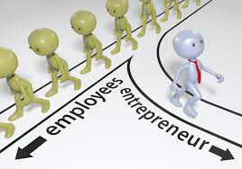

"Entrepreneur" redirects here. For other uses, see Entrepreneur (disambiguation).
"Co-founder" redirects here. For someone who cultivates a startup, see Startup company § Co-founders. Entrepreneurship is the process of designing, launching and running a new business, which is often initially a small business. The people who create these businesses are called entrepreneurs[need quotation to verify.
Entrepreneurship has been described as the "capacity and willingness to develop, organize and manage a business venture along with any of its risks in order to make a profit". While definitions of entrepreneurship typically focus on the launching and running of businesses, due to the high risks involved in launching a start-up, a significant proportion of start-up businesses have to close due to "lack of funding, bad business decisions, an economic crisis, lack of market demand—or a combination of all of these.
Entrepreneurship is the act of being an entrepreneur, or "the owner or manager of a business enterprise who, by risk and initiative, attempts to make profits". Entrepreneurs act as managers and oversee the launch and growth of an enterprise. Entrepreneurship is the process by which either an individual or a team identifies a business opportunity and acquires and deploys the necessary resources required for its exploitation. Early 19th century French economist Jean-Baptiste Say provided a broad definition of entrepreneurship, saying that it "shifts economic resources out of an area of lower and into an area of higher productivity and greater yield". Entrepreneurs create something new, something different—they change or transmute values. Regardless of the firm size, big or small, they can partake in entrepreneurship opportunities. The opportunity to become an entrepreneur requires four criteria. First, there must be opportunities or situations to recombine resources to generate profit. Second, entrepreneurship requires differences between people, such as preferential access to certain individuals or the ability to recognize information about opportunities. Third, taking on risk is a necessary. Fourth, the entrepreneurial process requires the organization of people and resources.

The entrepreneur is a factor in and the study of entrepreneurship reaches back to the work of Richard Cantillon and Adam Smith in the late 17th and early 18th centuries. However, entrepreneurship was largely ignored theoretically until the late 19th and early 20th centuries and empirically until a profound resurgence in business and economics since the late 1970s. In the 20th century, the understanding of entrepreneurship owes much to the work of economist Joseph Schumpeter in the 1930s and other Austrian economists such as Carl Menger, Ludwig von Mises and Friedrich von Hayek. According to Schumpeter, an entrepreneur is a person who is willing and able to convert a new idea or invention into a successful innovation. Entrepreneurship employs what Schumpeter called "the gale of creative destruction" to replace in whole or in part inferior innovations across markets and industries, simultaneously creating new products including new business models. In this way, creative destruction is largely responsible for the dynamism of industries and long-run economic growth. The supposition that entrepreneurship leads to economic growth is an interpretation of the residual in endogenous growth theory and as such is hotly debated in academic economics. An alternate description posited by Israel Kirzner suggests that the majority of innovations may be much more incremental improvements such as the replacement of paper with plastic in the making of drinking straws.
The exploitation of entrepreneurial opportunities may include:
Developing a business plan
Hiring the human resources
Acquiring financial and material resources
Providing leadership
Being responsible for both the venture's success or failure
Risk aversion
Economist Joseph Schumpeter (1883–1950) saw the role of the entrepreneur in the economy as "creative destruction" – launching innovations that simultaneously destroy old industries while ushering in new industries and approaches. For Schumpeter, the changes and "dynamic disequilibrium brought on by the innovating entrepreneur [were] the norm of a healthy economy".[9] While entrepreneurship is often associated with new, small, for-profit start-ups, entrepreneurial behavior can be seen in small-, medium- and large-sized firms, new and established firms and in for-profit and not-for-profit organizations, including voluntary-sector groups, charitable organizations and government.
Entrepreneurship may operate within an entrepreneurship ecosystem which often includes:
Government programs and services that promote entrepreneurship and support entrepreneurs and start-ups
Non-governmental organizations such as small-business associations and organizations that offer advice and mentoring to entrepreneurs (e.g. through entrepreneurship centers or websites)
Small-business advocacy organizations that lobby governments for increased support for entrepreneurship programs and more small business-friendly laws and regulations
Entrepreneurship resources and facilities (e.g. business incubators and seed accelerators)
Entrepreneurship education and training programs offered by schools, colleges and universities
Financing (e.g. bank loans, venture capital financing, angel investing and government and private foundation grants)[need quotation to verify]
In the 2000s, usage of the term "entrepreneurship" expanded to include how and why some individuals (or teams) identify opportunities, evaluate them as viable, and then decide to exploit them. The term has also been used to discuss how people might use these opportunities to develop new products or services, launch new firms or industries, and create wealth.The entrepreneurial process is uncertain because opportunities can only be identified after they have been exploited.
Entrepreneurs tend exhibit positive biases towards finding new possibilities and seeing unmet market needs, and a tendency towards risk-taking that makes them more likely to exploit business opportunities.